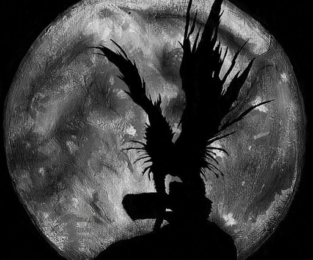

Ryuk es un shinigami que entrega indirectamente una Death Note a Light Yagami. Al estar aburrido en el Mundo Shinigami, consigue robar una segunda Death Note y la deja caer al Mundo Humano para que alguien la encuentre, todo esto con el objetivo de encontrar entretenimiento, cosa inexistente para él en su mundo. Esa Death Note fue recogida por Light, que la utiliza para intentar crear un mundo nuevo, libre de criminales y personas malvadas.
Apariencia
Ryuk es de contextura delgada, su piel es de color gris clara (un poco azulada), su cabello es negro y en punta, sus ojos son grandes y amarillos, con la iris roja, su nariz es similar a la de los murciélagos y su boca tiene labios azules con dientes afilados. Sus brazos son muy largos, tiene anillos en sus dedos y además posee grandes alas emplumadas en su espalda que le permiten volar, las cuales puede contraer hasta ocultarlas por completo.
Personalidad
Ryuk es diferente al resto de los Shinigami, los cuales prefieren pasan la mayor parte de su tiempo durmiendo o jugando, esto le aburre mucho, por lo que decide buscar como entretenerse en el Mundo Humano.
Otra característica muy significativa de Ryuk es el amor que profesa a las manzanas, ya que las del mundo shinigami son de un mal sabor y muy arenosas, y por tanto estas le son muy jugosas. Tanto las adora, que cuando pasa un tiempo sin consumir ninguna, empieza a retorcerse y a comportarse como una persona pequeña, debido al enorme síndrome de abstinencia que experimenta.
Tiene un carácter sumamente especial para ser un shinigami, puesto que es muy curioso y tiene mucha iniciativa, algo realmente extraño en su especie.
